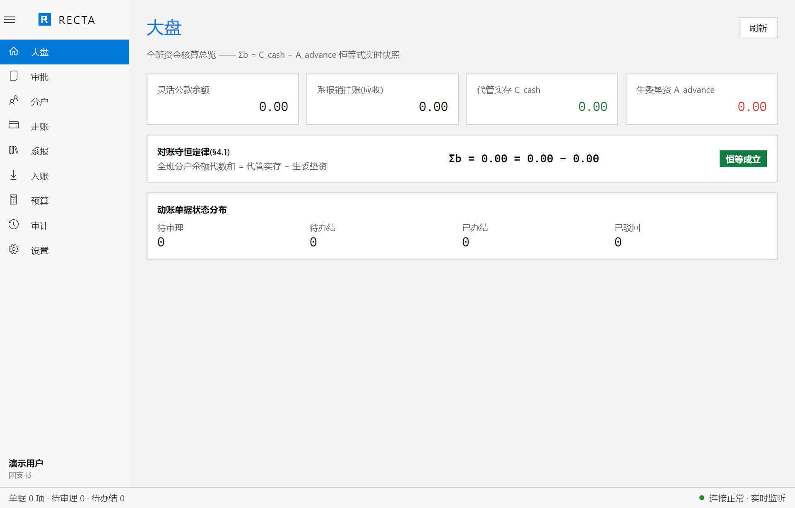
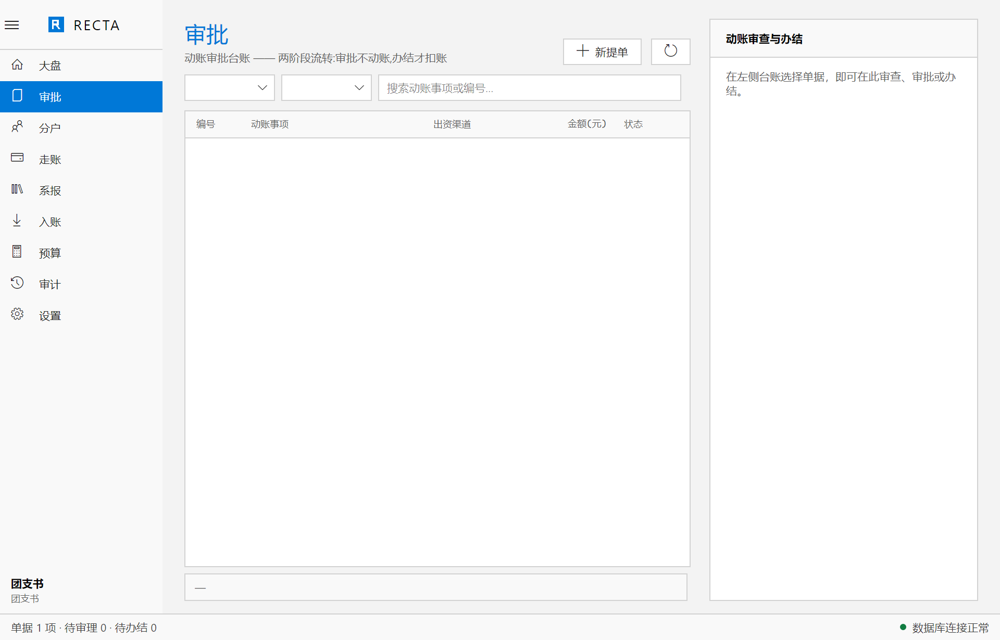
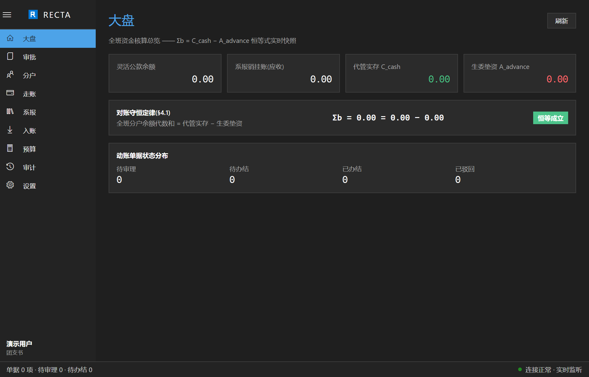
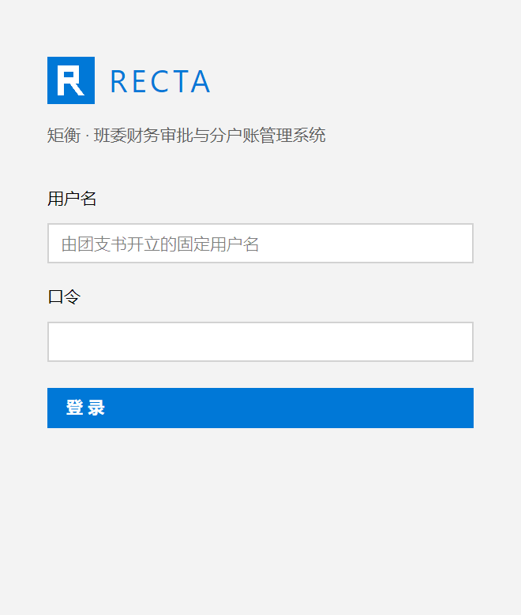

三类资金通道，各走各账。
班级灵活公款由团支书存管，系级报销往来由生活委员暂挂，班费个人独立分户受托代管。异构通道分流而治，不混一笔钱。

三类通道、两阶段流转与导出审计，
共享同一份服务端账本。
减少对不上账的夜晚，把时间还给同学。
班级灵活公款由团支书存管，系级报销往来由生活委员暂挂，班费个人独立分户受托代管。异构通道分流而治，不混一笔钱。
审批只认定资质与额度，不动账；办结确认资金到位后，才以原子事务扣账。驳回支持预置原因加补充说明，全程留痕。
int64 定点「分」贯穿全链路，全局禁用浮点。透支记负，构成对生活委员个人的无息借贷，办结批复自动披露垫资明细。
账目流水、分户名单与个人流水一键导出 CSV，UTF-8 BOM 加 RFC 4180 转义，Excel 直接打开不乱码；用户开立、停用与改名全程审计。
从一张单据开始，到一次原子扣账。
把申请、审批与办结串成闭环。
支出与入账共用一个入口，自动生成 REQ / INF 单号并附证明材料，按出资通道分流进入审批。
团支书与生活委员按通道资质与额度审批，此时账面纹丝不动；不合格的单据以预置原因驳回，留痕可查。
资金到位后办结，原子事务扣账并披露垫资明细。大盘上的 Σb = C_cash − A_advance 恒等式，时刻成立。

沿袭 Windows 10 MDL2 视觉语言：绝对方角、1px 实体细线、高信息密度与等宽表格数字。明暗双主题一键切换，#0078D7 七级蓝色阶贯穿全局，重要的数字永远先被看见。
在 GitHub 阅读技术规范

空系统启动时弹出一次性引导：开立首任团支书并生成临时口令，首登强制改密；此后所有账号由团支书在系统内开立。防自锁、防自停用、席位唯一等防护写进域层，不依赖界面自觉。
查看构建与使用说明Σb = C_cash − A_advance 作为对账守恒恒等式，在大盘实时快照。关键扣账以 FOR UPDATE 行级锁串行化，抗休眠重试执行器兜底，任何一次动账都不允许破坏守恒。
change_events 全局单调序列增量拉取，NOTIFY 轻通知双轨并行。断线退避重连，重连即补齐收敛，全员始终看到同一本账。
自动化回归、GUI 试玩与正式使用三轨分离。测试流量全部走隔离的数据库分支，可秒级重置；生产分支自始至终只承载真实数据。
v1.0.0 正式版现已上线。账目流水、分户名单与个人流水，均可一键导出 CSV；操作手册已随仓库发布。
目前提供 Windows x64 桌面版，支持 Windows 10 与 Windows 11。原生核心以 Modern C++20 编译，桌面层基于 Avalonia UI（.NET 10），安装包自包含运行时，无需另装 .NET。
账目集中存储在服务端 PostgreSQL（推荐 Neon Serverless Postgres），金额一律以 BIGINT「分」存储。对账守恒恒等式 Σb = C_cash − A_advance 在大盘实时校验，账目一旦落库即守恒。
不需要自行注册。空系统启动时弹出一次性引导，开立首任团支书并生成临时口令，首登强制改密；其后所有账号由团支书在系统内开立，账号可在用户管理页重置、停用或启用。
每个版本的改动都发布在 GitHub Releases，问题与建议请提交到 GitHub Issues，构建与部署说明见仓库 README。